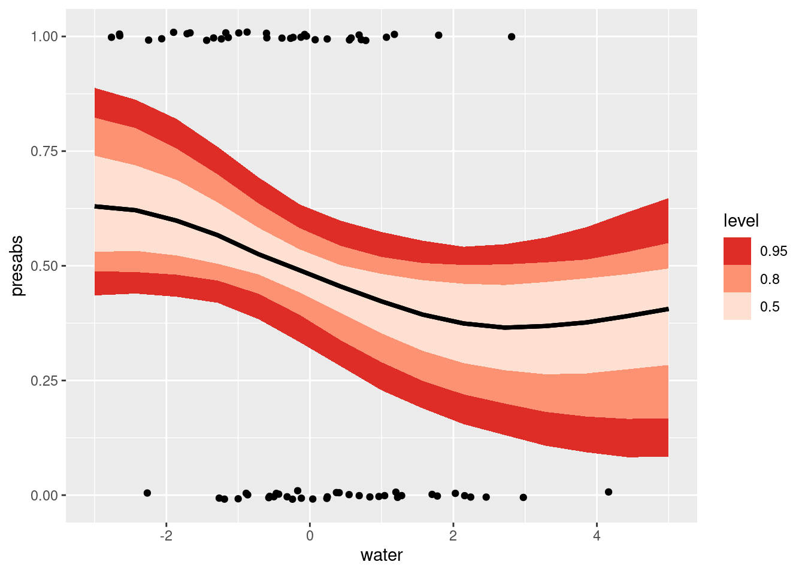

suppressPackageStartupMessages(library(dplyr))
library(ggplot2)
library(tidyr)
# library(cmdstanr)
suppressPackageStartupMessages(library(rstan))
rstan_options("auto_write" = TRUE)
options(mc.cores = parallel::detectCores())
library(tidybayes)
# mite data
data(mite, package = "vegan")
data(mite.env, package = "vegan")
## ALSO: the spatial data
data(mite.xy, package = "vegan")Gaussian Processes in Stan
Smooth lines in fancy colours.
Goals of this lesson
- Let’s appreciate together the power of online community resources
- Gaussian Processes are families of smooth functions we learn from data
- When used for prediction, a GP is both a “prior” and a “likelihood”
Background reading
Gaussian processes are very common, and there are lots of resources on the topic:
- The Stan manual has a chapter on it
- The Stan team gives lots of example models on Github which I adapted for this example.
- Michael Betancourt has an extremely detailed, very rigous tutorial on GPs
- Here’s a complete, worked analysis of human birthdays by world-class statisticians (Gelman, Vehtari, Simpson, et al)
- GPs are related to GAMs and can be represented by a collection of basis functions. This is approximate but much much faster. See this excellent tutorial by Aki Vehtari, and the corresponding paper (citation in the blog post).
- this blog applies GPs to spatial count data
- Here is a very long and wonderfully detailed post describing a GP approach to occupany modelling
- Another blog on Gaussian Processes, Hidden Markov Models and more, very clear explanation.
Reorganizing the mite data
Let’s begin by (once again!) loading and reorganizing the mite data. This time we’ll also use mite.xy, which gives the coordinates of each one of the 70 samples.
Loading models and data
# combine data and environment
mite_data_long <- bind_cols(mite.env, mite) |>
mutate(plot_id = 1:length(WatrCont)) |>
pivot_longer(Brachy:Trimalc2, names_to = "spp", values_to = "abd")
mite_data_long_transformed <- mite_data_long |>
mutate(presabs = as.numeric(abd>0),
# center predictors
water = (WatrCont - mean(WatrCont)) / 100
)
# pick a species that has about 50/50 chance
mite_data_long_transformed |>
group_by(spp) |>
summarize(freq = mean(presabs)) |>
filter(freq > .4 & freq < .6)# A tibble: 10 × 2
spp freq
<chr> <dbl>
1 Ceratoz3 0.443
2 FSET 0.429
3 HMIN 0.486
4 MEGR 0.543
5 NCOR 0.5
6 Oppiminu 0.429
7 Oribatl1 0.429
8 PWIL 0.486
9 TVEL 0.557
10 Trhypch1 0.457## how about: PWIL Let’s choose just one species as an example. I’ve chosen one where the relationship with water is rather strong, and for which presence and absence are roughly balanced. This is just to make the example clear.
pwil_data <- mite_data_long_transformed |>
filter(spp == "PWIL")
pwil_data |>
ggplot(aes(x = water, y = presabs)) + geom_point() +
stat_smooth(method = glm, method.args = list(family = "binomial")) +
theme_minimal()`geom_smooth()` using formula = 'y ~ x'# add the spatial coordinates:
pwil_spatial <- bind_cols(pwil_data, mite.xy)
pwil_spatial |>
ggplot(aes(x = x, y = y, fill = as.factor(presabs))) +
geom_point(size = 3, pch = 21, stroke = 1) +
scale_fill_brewer(type = "qual", palette = "Dark2") +
theme_minimal() +
coord_fixed() +
labs(fill = "Pres/Abs")
We’ll look at two possibilities in turn:
- A nonlinear function of one variable
- A smooth function of distance
Smooth function of one variable
Write the model
\[ \begin{align} \mathsf{Pr}(y_i = 1) &\sim \mathsf{Bernoulli}(p_i)\\ \mathsf{logit}(p_i) &= a + f_i\\ f_i &\sim \mathsf{multivariate\ normal}(0, K(x | \theta)) \\ K(x | \alpha, \rho, \sigma)_{i, j} &= \alpha^2 \exp \left( - \dfrac{1}{2 \rho^2} \sum_{d=1}^D (x_{i,d} - x_{j,d})^2 \right) + \delta_{i, j} \sigma^2, \end{align} \]
That’s the general notation for D dimensions. In our case we’re looking at something much simpler.
\[ \begin{align} \mathsf{Pr}(y_i = 1) &\sim \mathsf{Bernoulli}(p_i)\\ \mathsf{logit}(p_i) &= a + f_i\\ f_i &\sim \mathsf{Multivariate\ Normal}(0, K(x | \theta)) \\ K(x | \alpha, \rho, \sigma)_{i, j} &= \alpha^2 e^{ \frac{-(\text{water}_i - \text{water}_j)^2}{2 \rho^2}} + \delta_{i, j} \sigma^2 \\ \rho &\sim \mathsf{Inverse\ Gamma}(5, 14) \\ \alpha &\sim \mathsf{Normal}(0, .8) \\ a &\sim \mathsf{Normal}(0, .2) \\ \end{align} \]
Here’s an interpretation of the parameters of this model:
- \(a^2\) is the maximume covariance between two points
- \(\rho\) tells us how quickly that covariance goes down as two samples become more different in their water amount
- \(\delta_{i, j} \sigma^2\) adds the variances along the diagonal
See the explanation of this function in the Stan User’s guide
Simulate to understand it
Here is the Stan code that replicates the mathematical model above.
gp_example_sim <- stan_model(file = "topics/04_gp/gp_example_sim.stan")
gp_example_simS4 class stanmodel 'anon_model' coded as follows:
// Fit the hyperparameters of a latent-variable Gaussian process with an
// exponentiated quadratic kernel and a Bernoulli likelihood
// This code is from https://github.com/stan-dev/example-models/blob/master/misc/gaussian-process/gp-fit-logit.stan
data {
int<lower=1> N;
array[N] real x;
}
transformed data {
real delta = 1e-9;
}
parameters {
real<lower=0> rho;
real<lower=0> alpha;
real a;
vector[N] eta;
vector[N] y;
}
transformed parameters {
vector[N] f;
{
matrix[N, N] L_K;
matrix[N, N] K = gp_exp_quad_cov(x, alpha, rho);
// diagonal elements
for (n in 1 : N) {
K[n, n] = K[n, n] + delta;
}
L_K = cholesky_decompose(K);
f = L_K * eta;
}
}
model {
rho ~ inv_gamma(5, 14);
alpha ~ normal(0, .8);
a ~ normal(0, .2);
eta ~ std_normal();
} gp_example_sim_samples <- sampling(
gp_example_sim,
data = list(
N = 20,
x = seq(from = -3, to = 5, length.out = 20)),
refresh = 200, chains = 1
)
SAMPLING FOR MODEL 'anon_model' NOW (CHAIN 1).
Chain 1:
Chain 1: Gradient evaluation took 2.7e-05 seconds
Chain 1: 1000 transitions using 10 leapfrog steps per transition would take 0.27 seconds.
Chain 1: Adjust your expectations accordingly!
Chain 1:
Chain 1:
Chain 1: Iteration: 1 / 2000 [ 0%] (Warmup)
Chain 1: Iteration: 200 / 2000 [ 10%] (Warmup)
Chain 1: Iteration: 400 / 2000 [ 20%] (Warmup)
Chain 1: Iteration: 600 / 2000 [ 30%] (Warmup)
Chain 1: Iteration: 800 / 2000 [ 40%] (Warmup)
Chain 1: Iteration: 1000 / 2000 [ 50%] (Warmup)
Chain 1: Iteration: 1001 / 2000 [ 50%] (Sampling)
Chain 1: Iteration: 1200 / 2000 [ 60%] (Sampling)
Chain 1: Iteration: 1400 / 2000 [ 70%] (Sampling)
Chain 1: Iteration: 1600 / 2000 [ 80%] (Sampling)
Chain 1: Iteration: 1800 / 2000 [ 90%] (Sampling)
Chain 1: Iteration: 2000 / 2000 [100%] (Sampling)
Chain 1:
Chain 1: Elapsed Time: 10.013 seconds (Warm-up)
Chain 1: 12.298 seconds (Sampling)
Chain 1: 22.311 seconds (Total)
Chain 1: Warning: There were 23 divergent transitions after warmup. See
https://mc-stan.org/misc/warnings.html#divergent-transitions-after-warmup
to find out why this is a problem and how to eliminate them.Warning: There were 898 transitions after warmup that exceeded the maximum treedepth. Increase max_treedepth above 10. See
https://mc-stan.org/misc/warnings.html#maximum-treedepth-exceededWarning: Examine the pairs() plot to diagnose sampling problemsWarning: The largest R-hat is 2.12, indicating chains have not mixed.
Running the chains for more iterations may help. See
https://mc-stan.org/misc/warnings.html#r-hatWarning: Bulk Effective Samples Size (ESS) is too low, indicating posterior means and medians may be unreliable.
Running the chains for more iterations may help. See
https://mc-stan.org/misc/warnings.html#bulk-essWarning: Tail Effective Samples Size (ESS) is too low, indicating posterior variances and tail quantiles may be unreliable.
Running the chains for more iterations may help. See
https://mc-stan.org/misc/warnings.html#tail-essx_value_df <- tibble::enframe(x = seq(from = -3, to = 5, length.out = 20),
name = "i", value = "water")
gp_example_sim_samples |>
tidybayes::spread_draws(f[i], a, ndraws = 45) |>
left_join(x_value_df) |>
ggplot(aes(x = water, y = plogis(f + a), group = .draw)) +
geom_line() +
coord_cartesian(ylim = c(0, 1))Joining with `by = join_by(i)`Express that model in code
With a working simulation, we can now adapt the model to handle real data.
gp_example_pred <- stan_model(
file = "topics/04_gp/gp_example_pred.stan")
gp_example_predS4 class stanmodel 'anon_model' coded as follows:
// Fit the hyperparameters of a latent-variable Gaussian process with an
// exponentiated quadratic kernel and a Bernoulli likelihood
// This code is from https://github.com/stan-dev/example-models/blob/master/misc/gaussian-process/gp-fit-logit.stan
data {
int<lower=1> Nobs;
int<lower=1> N;
array[N] real x;
array[Nobs] int<lower=0, upper=1> z;
}
transformed data {
real delta = 1e-9;
}
parameters {
real<lower=0> rho;
real<lower=0> alpha;
real a;
vector[N] eta;
}
transformed parameters {
vector[N] f;
{
matrix[N, N] L_K;
matrix[N, N] K = gp_exp_quad_cov(x, alpha, rho);
// diagonal elements
for (n in 1 : N) {
K[n, n] = K[n, n] + delta;
}
L_K = cholesky_decompose(K);
f = L_K * eta;
}
}
model {
rho ~ inv_gamma(5, 14);
alpha ~ normal(0, .8);
a ~ normal(0, .2);
eta ~ std_normal();
z ~ bernoulli_logit(a + f[1:Nobs]);
} We need to generate data for making predictions! I’ll create a new vector of observations called new_x that cover the range of the water variable in our dataset.
# sample N values on the range of x
new_x <- seq(from = -3, to = 5, length.out = 15)
gp_data_list <- list(N = length(pwil_spatial$presabs) + length(new_x),
Nobs = length(pwil_spatial$presabs),
x = c(pwil_spatial$water, new_x),
z = pwil_spatial$presabs)
# put them on the dataframe
gp_example_pwil_samp <- sampling(
gp_example_pred,
data = gp_data_list,
chains = 2, refresh = 1000)
# gp_example_samp$save_object("topics/04_gp/gp_example_samp_pwil.rds")
Tip
Note that cmdstanr models have a method called $save_object(), which lets you save the model outputs into an .rds object.
Also note that these notes have been converted to rstan so this tip doesn’t help that much anymore ;)
# gp_example_samp_pwil <- read_rds(
# "topics/04_gp/gp_example_samp_pwil.rds")
water_prediction_points <- gp_example_pwil_samp |>
tidybayes::gather_rvars(f[rownum]) |>
slice(-(1:length(pwil_spatial$presabs)))
water_prediction_points |>
mutate(water = new_x,
presabs = posterior::rfun(plogis)(.value)) |>
ggplot(aes(x = water, dist = presabs)) +
tidybayes::stat_lineribbon() +
# scale_fill_viridis_d(option = "rocket") +
scale_fill_brewer(palette = "Reds", direction = -1) +
geom_jitter(aes(x = water, y = presabs),
inherit.aes = FALSE,
height = .01, width = 0,
data = pwil_spatial)
We can also pull out some specific functions. What I want you to see here is that there are MANY curvy lines that are consistent with this model.
some_predicted_lines <- gp_example_pwil_samp |>
# take just some draws
tidybayes::spread_draws(a, f[rownum], ndraws = 63) |>
# remove the rows that match observed data,
# and look only at the points for predictions.
filter(rownum > length(pwil_spatial$presabs)) |>
# convert to probability
mutate(prob = plogis(f + a),
rownum = rownum - 70) |>
## need a dataframe that says which "rownum" from
## above goes with which value of water from the
## new_x vector I made:
left_join(tibble::enframe(new_x,
name = "rownum",
value = "water"))Joining with `by = join_by(rownum)`some_predicted_lines |>
ggplot(aes(x = water, y = prob, group = .draw)) +
geom_line(alpha = 0.7) +
theme_minimal() +
coord_cartesian(ylim = c(0, 1))
Spatial predictions
To make a prediction of a function on one X variable, we needed a sequence of points to predict along.
To make spatial predictions, we need a grid of points to predict along.
grid_points <- modelr::data_grid(mite.xy,
x = modelr::seq_range(x, by = .5),
y = modelr::seq_range(y, by = .5))
grid_points |>
ggplot(aes(x = x, y = y)) +
geom_point() +
coord_fixed()Other than a change in the data {} block, the Stan code is unchanged!
Prior predictive simulations
gp_example_2D_prior <- stan_model(
file = "topics/04_gp/gp_example_2D_prior.stan")Warning in readLines(file, warn = TRUE): incomplete final line found on
'/home/andrew/Documents/Projects/hiermod/topics/04_gp/gp_example_2D_prior.stan'recompiling to avoid crashing R sessionTrying to compile a simple C fileRunning /usr/lib/R/bin/R CMD SHLIB foo.c
using C compiler: ‘gcc (Ubuntu 11.4.0-1ubuntu1~22.04) 11.4.0’
gcc -I"/usr/share/R/include" -DNDEBUG -I"/home/andrew/R/x86_64-pc-linux-gnu-library/4.4/Rcpp/include/" -I"/home/andrew/R/x86_64-pc-linux-gnu-library/4.4/RcppEigen/include/" -I"/home/andrew/R/x86_64-pc-linux-gnu-library/4.4/RcppEigen/include/unsupported" -I"/home/andrew/R/x86_64-pc-linux-gnu-library/4.4/BH/include" -I"/home/andrew/R/x86_64-pc-linux-gnu-library/4.4/StanHeaders/include/src/" -I"/home/andrew/R/x86_64-pc-linux-gnu-library/4.4/StanHeaders/include/" -I"/home/andrew/R/x86_64-pc-linux-gnu-library/4.4/RcppParallel/include/" -I"/home/andrew/R/x86_64-pc-linux-gnu-library/4.4/rstan/include" -DEIGEN_NO_DEBUG -DBOOST_DISABLE_ASSERTS -DBOOST_PENDING_INTEGER_LOG2_HPP -DSTAN_THREADS -DUSE_STANC3 -DSTRICT_R_HEADERS -DBOOST_PHOENIX_NO_VARIADIC_EXPRESSION -D_HAS_AUTO_PTR_ETC=0 -include '/home/andrew/R/x86_64-pc-linux-gnu-library/4.4/StanHeaders/include/stan/math/prim/fun/Eigen.hpp' -D_REENTRANT -DRCPP_PARALLEL_USE_TBB=1 -fpic -g -O2 -ffile-prefix-map=/build/r-base-JpkSDg/r-base-4.4.3=. -fstack-protector-strong -Wformat -Werror=format-security -Wdate-time -D_FORTIFY_SOURCE=2 -c foo.c -o foo.o
In file included from /home/andrew/R/x86_64-pc-linux-gnu-library/4.4/RcppEigen/include/Eigen/Core:19,
from /home/andrew/R/x86_64-pc-linux-gnu-library/4.4/RcppEigen/include/Eigen/Dense:1,
from /home/andrew/R/x86_64-pc-linux-gnu-library/4.4/StanHeaders/include/stan/math/prim/fun/Eigen.hpp:22,
from <command-line>:
/home/andrew/R/x86_64-pc-linux-gnu-library/4.4/RcppEigen/include/Eigen/src/Core/util/Macros.h:679:10: fatal error: cmath: No such file or directory
679 | #include <cmath>
| ^~~~~~~
compilation terminated.
make: *** [/usr/lib/R/etc/Makeconf:195: foo.o] Error 1gp_example_2D_priorS4 class stanmodel 'anon_model' coded as follows:
// Fit the hyperparameters of a latent-variable Gaussian process with an
// exponentiated quadratic kernel and a Bernoulli likelihood
// This code is from https://github.com/stan-dev/example-models/blob/master/misc/gaussian-process/gp-fit-logit.stan
data {
// int<lower=1> Nobs;
int<lower=1> N;
array[N] vector[2] x;
real rho_a;
real rho_b;
// array[Nobs] int<lower=0, upper=1> z;
}
transformed data {
real delta = 1e-9;
}
parameters {
real<lower=0> rho;
real<lower=0> alpha;
real a;
vector[N] eta;
}
transformed parameters {
vector[N] f;
{
matrix[N, N] L_K;
matrix[N, N] K = gp_exp_quad_cov(x, alpha, rho);
// diagonal elements
for (n in 1 : N) {
K[n, n] = K[n, n] + delta;
}
L_K = cholesky_decompose(K);
f = L_K * eta;
}
}
model {
rho ~ inv_gamma(rho_a, rho_b);
alpha ~ normal(0, .8);
a ~ normal(0, .2);
eta ~ std_normal();
// z ~ bernoulli_logit(a + f[1:Nobs]);
} gp_example_2D_prior_samp <- sampling(
gp_example_2D_prior,
data = list(N = nrow(grid_points),
x = grid_points,
rho_a = 5, rho_b = 14),
chains = 2, refresh = 1000)visualize the prior
## extract the predictors
gp_example_2D_prior_samp |>
tidybayes::spread_draws(f[rownum], a, ndraws = 6) |>
mutate(rownum = as.character(rownum)) |>
left_join(grid_points |>
tibble::rownames_to_column("rownum"), by = join_by(rownum)) |>
mutate(presabs = plogis(f + a)) |>
ggplot(aes(x = x, y = y, fill = presabs)) +
geom_tile()+
scale_fill_viridis_c(option = "rocket") +
coord_fixed()+
theme_minimal() +
labs(fill = "Pr(y=1)") +
facet_wrap(~.draw) +
NULL 
CAUTION: Slow
The model below, over 70 points, is the slowest model we’ve seen so far and takes about 1 minute on my (Andrew’s) laptop.
gp_example_pred_2D <- stan_model(
file = "topics/04_gp/gp_example_pred_2D.stan")Warning in readLines(file, warn = TRUE): incomplete final line found on
'/home/andrew/Documents/Projects/hiermod/topics/04_gp/gp_example_pred_2D.stan'recompiling to avoid crashing R sessionTrying to compile a simple C fileRunning /usr/lib/R/bin/R CMD SHLIB foo.c
using C compiler: ‘gcc (Ubuntu 11.4.0-1ubuntu1~22.04) 11.4.0’
gcc -I"/usr/share/R/include" -DNDEBUG -I"/home/andrew/R/x86_64-pc-linux-gnu-library/4.4/Rcpp/include/" -I"/home/andrew/R/x86_64-pc-linux-gnu-library/4.4/RcppEigen/include/" -I"/home/andrew/R/x86_64-pc-linux-gnu-library/4.4/RcppEigen/include/unsupported" -I"/home/andrew/R/x86_64-pc-linux-gnu-library/4.4/BH/include" -I"/home/andrew/R/x86_64-pc-linux-gnu-library/4.4/StanHeaders/include/src/" -I"/home/andrew/R/x86_64-pc-linux-gnu-library/4.4/StanHeaders/include/" -I"/home/andrew/R/x86_64-pc-linux-gnu-library/4.4/RcppParallel/include/" -I"/home/andrew/R/x86_64-pc-linux-gnu-library/4.4/rstan/include" -DEIGEN_NO_DEBUG -DBOOST_DISABLE_ASSERTS -DBOOST_PENDING_INTEGER_LOG2_HPP -DSTAN_THREADS -DUSE_STANC3 -DSTRICT_R_HEADERS -DBOOST_PHOENIX_NO_VARIADIC_EXPRESSION -D_HAS_AUTO_PTR_ETC=0 -include '/home/andrew/R/x86_64-pc-linux-gnu-library/4.4/StanHeaders/include/stan/math/prim/fun/Eigen.hpp' -D_REENTRANT -DRCPP_PARALLEL_USE_TBB=1 -fpic -g -O2 -ffile-prefix-map=/build/r-base-JpkSDg/r-base-4.4.3=. -fstack-protector-strong -Wformat -Werror=format-security -Wdate-time -D_FORTIFY_SOURCE=2 -c foo.c -o foo.o
In file included from /home/andrew/R/x86_64-pc-linux-gnu-library/4.4/RcppEigen/include/Eigen/Core:19,
from /home/andrew/R/x86_64-pc-linux-gnu-library/4.4/RcppEigen/include/Eigen/Dense:1,
from /home/andrew/R/x86_64-pc-linux-gnu-library/4.4/StanHeaders/include/stan/math/prim/fun/Eigen.hpp:22,
from <command-line>:
/home/andrew/R/x86_64-pc-linux-gnu-library/4.4/RcppEigen/include/Eigen/src/Core/util/Macros.h:679:10: fatal error: cmath: No such file or directory
679 | #include <cmath>
| ^~~~~~~
compilation terminated.
make: *** [/usr/lib/R/etc/Makeconf:195: foo.o] Error 1gp_example_pred_2DS4 class stanmodel 'anon_model' coded as follows:
// Fit the hyperparameters of a latent-variable Gaussian process with an
// exponentiated quadratic kernel and a Bernoulli likelihood
// This code is from https://github.com/stan-dev/example-models/blob/master/misc/gaussian-process/gp-fit-logit.stan
data {
int<lower=1> Nobs;
int<lower=1> N;
array[N] vector[2] x;
array[Nobs] int<lower=0, upper=1> z;
}
transformed data {
real delta = 1e-9;
}
parameters {
real<lower=0> rho;
real<lower=0> alpha;
real a;
vector[N] eta;
}
transformed parameters {
vector[N] f;
{
matrix[N, N] L_K;
matrix[N, N] K = gp_exp_quad_cov(x, alpha, rho);
// diagonal elements
for (n in 1 : N) {
K[n, n] = K[n, n] + delta;
}
L_K = cholesky_decompose(K);
f = L_K * eta;
}
}
model {
rho ~ inv_gamma(5, 14);
alpha ~ normal(0, .8);
a ~ normal(0, .2);
eta ~ std_normal();
z ~ bernoulli_logit(a + f[1:Nobs]);
} plot the effect in space:
## sample the model
gp_example_2D_samp <- sampling(
gp_example_pred_2D,
data = list(N = length(pwil_spatial$presabs) + nrow(grid_points),
Nobs = length(pwil_spatial$presabs),
x = bind_rows(pwil_spatial[c("x", "y")], grid_points),
z = pwil_spatial$presabs),
chains = 2, refresh = 200)
# gp_example_2D_samp$save_object("topics/04_gp/gp_example_2D_samp_pwil.rds")# gp_example_2D_samp_pwil <- read_rds("topics/04_gp/gp_example_2D_samp_pwil.rds")
## extract the predictors
gp_example_2D_samp |>
tidybayes::spread_rvars(f[rownum], a) |>
slice(-(1:length(pwil_spatial$presabs))) |>
bind_cols(grid_points) |>
mutate(presabs = posterior::rfun(plogis)(f + a),
pa_median = median(presabs)) |>
ggplot(aes(x = x, y = y, fill = pa_median)) +
geom_tile()+
geom_point(aes(x = x,
y = y,
fill = presabs),
inherit.aes = FALSE,
data = pwil_spatial,
pch = 21 ,
size = 2.5,
stroke = .3,
colour = "lightblue"
) +
scale_fill_viridis_c(option = "rocket") +
coord_fixed()+
theme_minimal() +
labs(fill = "Pr(y=1)") +
NULL # ggsave("topics/04_gp/pwil_spatial.png")Extensions:
Add water to the model. Does the spatial effect disappear, increase, or stay kind of the same?
Next step: try to model water curve for more than one species. Would it be possible to make the species rho parameters hierarchical?